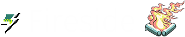

<div class="site-selector" ng-class="{ 'site-selector-logo-visible': !ctrl.shouldHideLogo }">

	<a class="navbar-item" ng-href="{{ ::ctrl.url }}" ng-switch="ctrl.currentSite" ng-if="!ctrl.shouldHideLogo">

		<!-- Main -->
		<span ng-switch-when="main">
			
		</span>

		<!-- Jams -->
		<span ng-switch-when="jams">
			
			
		</span>

		<!-- Fireside -->
		<span ng-switch-when="fireside">
			
		</span>

		<!-- Developers -->
		<span ng-switch-when="dev">
			
			
		</span>

	</a>

	<a class="navbar-item site-selector-more" gj-popover-trigger="site-selector" ng-class="{ active: ctrl.isPopoverActive }">
		<span class="jolticon jolticon-chevron-down"></span>
	</a>

	<gj-popover class="site-selector-popover popover-dark"
		popover-id="site-selector"
		popover-append-to-body="true"
		popover-position-by="position"
		popover-on-focus="ctrl.isPopoverActive = true"
		popover-on-blur="ctrl.isPopoverActive = false"
		>

		<div class="site-selector-list">

			<!-- Site -->
			<a class="site-selector-list-item" ng-href="{{ ::Environment.baseUrl }}" ng-if="::ctrl.currentSite != 'main'" title="Game Jolt - Indie games for the love of it">
				
			</a>

			<!-- Fireside -->
			<a class="site-selector-list-item" ng-href="{{ ::Environment.firesideBaseUrl }}" ng-if="::ctrl.currentSite != 'fireside'" title="Fireside - Indie gaming opinions, news, and reviews">
				
			</a>

			<!-- Jams -->
			<a class="site-selector-list-item" ng-href="{{ ::Environment.jamsBaseUrl }}" ng-if="::ctrl.currentSite != 'jams'" title="Game Jolt Jams">
				
				
			</a>

		</div>

	</gj-popover>

</div>
